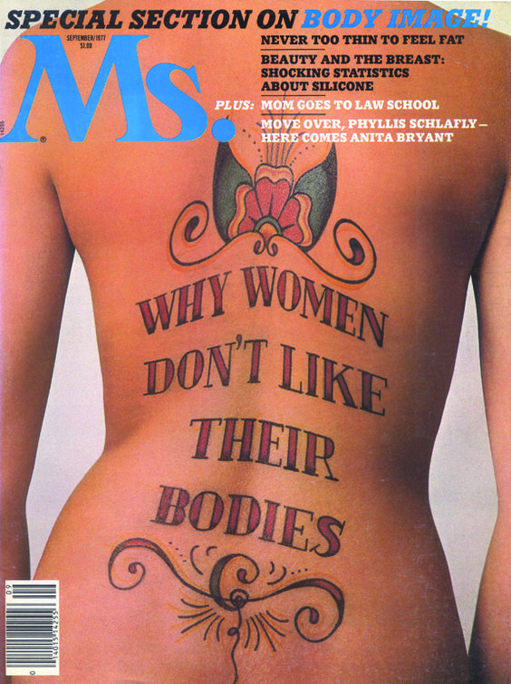
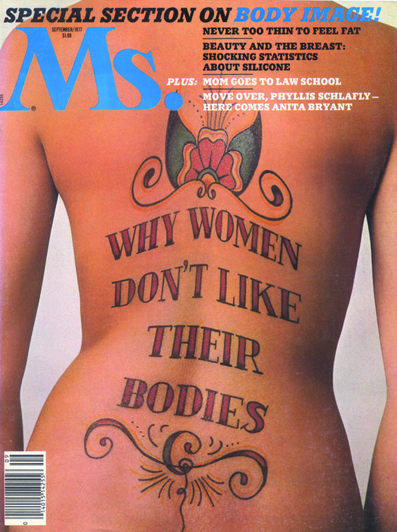

The magazine Ms. was launched by Gloria Steinem in 1971, and started as a sample-insert for New York Magazine but later on came to be a seminal item which shaped the feminist movement. The name in of itself speaks for everything that the magazine stands for. For a man, the surname is Mr., whether or not he is married, but for a woman the surname is Mrs. meaning that she is married. However, Ms. is a surname that is used whether she is married or not. At that time, and even still today, most magazines marketed towards women, "were limited to advice about saving marriages, raising babies, or using the right cosmetics."
Ms. Magazine proclaimed the reality of being a woman, not the fantasied one.
In it's pages, articles about illegal abortions, studies on date rape and domestic violence were highlighted for the first time in a national magazine.Here are some Article Ideas Feautured in a retrospective New York Magazine did in 2011
Some Notes on a New Magazine (4/71):
*THE POLITICS OF SEX
*DON'T BELIEVE HIM WHEN HE SAYS POLITICS BEGIN IN WASHINGTON. POLITICS BEGIN AT HOME.
*HOW NOT TO GO THROUGH MENOPAUSE
*A SECRETARY IS AN OFFICE WIFE
*SOMEONE SHOULD HAVE LIBERATED PAT NIXON
*"OF COURSE, I'M ALL FOR EQUAL PAY, BUT..."
*HOW MARRIAGE KILLS LOVE
The cover of a magazine is arguably, the most important feature of a magazine as it is the thesis of that issue. It should be shocking, beautiful and attention grabbing. The first issue of the magazine featured an image of wonder woman charging through the streets. Another issue had a melancholic image of a woman with a black eye with the headline, "Battered Wives, Help for the Secret Victim Next Door." In 1972 after the Kent State Shooting their cover was solely typographic, reading, "PEACE ON EARTH GOOD WILL TO PEOPLE." A favorite cover of mine is one from 1977 which has an image of a woman's back with type done in a tattoo style which says, "why women don't like their bodies." I love that cover because the combination of the copy and image are so naturally connected. The topics in these issues were shocking then but are still rampant today, proving that maybe this movement doesn't end or begin with a magazine.